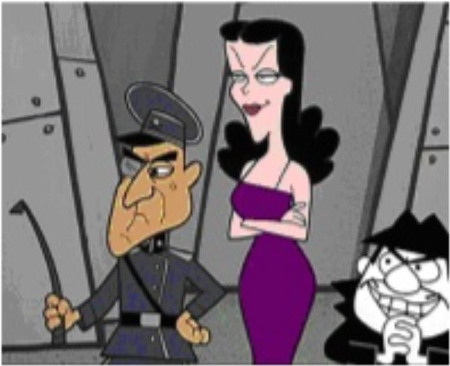

| Feature Article - July 2021 |
| by Do-While Jones |
The theory of evolution is part of a conspiracy theory.
A postscript to an email praising our May newsletter inspired this month's feature article.
|
I wish every politician would read "The Evolution of COVID-19" 1 but, knowing most don't even read bills with their names attached tells us all we need to know. Great job! And Thanks! PS This would be a great article for my conspiracy theory believing friends as well. But... they don't/won't like it either for many of the reasons as the politicians. PPS Maybe a good topic would be this question -- The theory of Evolution vs. Conspiracy theory, what's the difference? Harley |
Occasionally, from time to time over the past couple of decades, we have heard evolutionists use a guilt-by-association argument to defend the theory of evolution. It uses the presumption that all conspiracy theories are kooky and invalid, to establish the idea that creationists are kooks who believe the theory of evolution is a conspiracy theory. They challenge creationists to identify the "Mr. Big" 2 who is directing all the scientists to claim falsely that the theory of evolution is true.
 |
|---|
Since the creationists can't point to the individual in charge, the evolutionists claim that creationists are deluded.
Is there a shadowy person behind the curtain promoting the theory of evolution? Are all the scientists who believe in evolution following orders? Is there an identifiable individual (or group, or groups) coordinating the message for it to be a conspiracy? Or, as Harley put it, "The theory of evolution vs. conspiracy theory, what's the difference?"
To make sure we are all on the same page, here's the definition we are using:
|
Conspiracy [ kuhn-spir-uh-see ]
|
Have some people surreptitiously joined together to use the theory of evolution for an evil purpose? We believe they have.
In support of that belief, it is necessary for us to identify the plan, and the people involved.
At the risk of sounding overdramatic, the plan is world domination. An important part of achieving that plan is to use the thought police for speech control. The fake news has made "Newspeak" common.
|
The term "Newspeak" was coined by George Orwell in his 1949 anti-utopian novel 1984. In Orwell's fictional totalitarian state, Newspeak was a language favored by the minions of Big Brother and, in Orwell's words, "designed to diminish the range of thought." Newspeak was characterized by the elimination or alteration of certain words, the substitution of one word for another, the interchangeability of parts of speech, and the creation of words for political purposes. The word has caught on in general use to refer to confusing or deceptive bureaucratic jargon. 4 |
In Newspeak, The Ministry of Love, was where the secret police interrogated and tortured political enemies; the war department was called The Ministry of Peace; The Ministry of Truth controlled people by using lies, propaganda, and distorted historical records.
Newspeak words are usually the opposite of what they commonly mean. The Newspeak meaning of "tolerance" is "intolerance" because only politically correct speech is tolerated. It is prevalent today, and it does diminish free thought and free speech.
People can even be "cancelled" for politically incorrect things they said decades ago, most of which involve race. It all stems from the false science that "colored people" (an admittedly politically incorrect term which we use at the risk of being cancelled) are not as highly evolved as white people, so they need "affirmative action" and "reparations" to achieve "equity."
Newspeak doesn't just control political speech--it controls scientific speech as well. The success of evolutionists to redefine speech to call the theory of evolution "scientific" led the way for other unscientific ideas (global warming and the separation of gender from sex) to be given credibility.
A woman showed me her medical records which said her gender was "female--assigned at birth." Gender isn't "assigned" at birth--it is determined at conception. That's a scientific fact which is disputed by people who have come to accept political fantasy over scientific reality. Today, if you want to believe something demonstrably false is true (for example, that you can decide your own gender) it is not only your right to believe the lie, other people must agree with you, too! Men must be allowed to compete in women's sports if they feel like a woman.
"They" (the people we will identify in the next section) use the redefinition of speech to gain control. The Ministry of Truth really exists today, and everything they say is the opposite of the truth. For example, The Affordable Care Act was actually the Force People to Buy Unaffordable Inferior Health Insurance They Don't Want Act. The pending Voting Rights Act is really the Election Nullification Act, which will make it easier for those in power to cheat and keep Americans from voting them out of office.
COVID-19 gave politicians all over the world, not just the United States, an opportunity to use fake science to justify their policies regulating freedom of assembly, freedom of worship, freedom of speech, and commerce. It truly is a world-wide conspiracy.
As the Tears For Fears song says, "Everybody wants to rule the world." "They" use groups like NATO and the United Nations to coordinate their efforts. President Biden recently said,
|
And I'm deeply gratified that as an alliance, we adopted a far reaching plan to make sure NATO can meet the challenges that we face today and in the future, not yesterday, the NATO 2030 agenda. And that we agreed to fully resource that agenda. 5 |
If you like being scared, don't read a Stephen King novel. Read the NATO 2030 agenda 6 instead. It is the most frightening 67 pages you will ever read.
Because the NATO 2030 agenda was written by The Ministry of Truth, it sounds good--but it is "an evil, unlawful, treacherous, or surreptitious plan," making it a conspiracy by definition. It has been published, and the link to it is in the footnotes, so it technically isn't a secret, but hardly anybody knows what it says.
|
To inform its work, the Reflection Group conducted extensive consultations within and outside of NATO, including with scholars, leaders from business and the technology sector, parliamentarians, military officials, and government representatives from all thirty Allies, most NATO partner states, and numerous International Organisations (see Chronology in Annex). 7 |
That's certainly "a combination of persons," which is a key part of the definition of a conspiracy.
NATO, the North Atlantic Treaty Organization, was formed on April 4, 1949, to protect the 30 member nations from aggression by the Soviet Union.
|
Its cornerstone was, and remains, Article 5, which states that 'an armed attack against one or more of them in Europe or North America shall be considered an attack against them all.' This defensive component is NATO's first and most essential requirement. 8 |
Most people consider NATO to be simply a military alliance, but
|
From the very beginning of NATO, then, it was recognised that while defence cooperation was the first and most urgent requirement, this was not enough. It has also become increasingly realised since the Treaty was signed that security is today far more than a military matter. The strengthening of political consultation and economic cooperation, the development of resources, progress in education and public understanding, all these can be as important, or even more important, for the protection of the security of a nation, or an alliance, as the building of a battleship or the equipping of an army. 9 |
NATO is an alliance whose goal is to promote a political agenda through "education and public understanding." In other words, they use propaganda to achieve their goals.
|
Political divergences within NATO are dangerous because they enable external actors, and in particular Russia and China, to exploit intra-Alliance differences and take advantage of individual Allies in ways that endanger their collective interests and security. This includes actions that are directly relevant to NATO's traditional geographic and functional mission but also extends to the cyber, technological, and strategic-commercial realms--and indeed, the democratic way of life. 10 |
NATO's mission is to use cyber, technological, and commercial methods to stamp out political differences. It is the opposite of democracy. NATO's mission is to prevent member nations from deciding political issues for themselves. For example,
|
In parallel, since the 2000 adoption of UN Security Council Resolution 1325, and subsequent resolutions, NATO has worked to integrate the Women, Peace and Security (WPS) agenda into its operations and counter terrorism activities, as well as across the three core tasks, and as an integral aspect of its doctrines and planning. These steps, together with efforts to ensure a diverse workforce, enable NATO to think more creatively and comprehensively about evolving security challenges, enhance the Alliance's value and relevance to its publics, better understand the environments in which it operates and the potential impacts its policies and programmes may have, and ensure strategic and operational effectiveness on the ground. More broadly, emphasising the value of human dignity and security differentiates NATO from authoritarian rivals and terrorist groups, which are among the world's human rights abusers. 11 |
"A diverse workforce" is Newspeak for "a workforce without any diversity (of opinion)."
Some cultures believe that men and women have fundamentally different roles in society. That's not acceptable to the NATO authorities. The NATO authorities think it is their duty to stamp out traditional views about femininity by associating those views with "terrorist groups."
|
A drift toward NATO disunity, should it occur, must be seen as a strategic rather than merely tactical or optical problem. Should such a trend be left unaddressed, it will place all NATO Allies, big and small, on much less favourable terms in the coming decade than would otherwise be the case if they acted together. This brings into sharper focus the central political task for NATO in our time: to consolidate the transatlantic Alliance for an era of strategic simultaneity, in which numerous interconnected threats face the Alliance at the same time. Such an environment will require NATO to build on the increased political consultations that have taken place in the Alliance in recent years to make the North Atlantic Council the unique and essential forum for consultation on the most important strategic issues, including major national-security developments, the status of the threat, common security, and national-operational or capability-related decisions which have an impact on the Alliance and its members. Achieving this outcome will not be easy. Divergences in threat perception cannot simply be wished away, since they are an expression of a state's own unique interests, geography, and national-political outlook. But arriving at a convergence of political and strategic priorities is possible, necessary, and entirely in keeping with the traditions of the Alliance. The history of NATO is defined by the determined pursuit of such convergence--itself an inherently political act--by using strategy and statecraft to forge compromises and enable common action in a way that serves the good of all Allies. 12 |
NATO wants to use "strategy and statecraft" to overrule "a state's own unique interests" for "the good of all Allies." The New World Order is not a crackpot conspiracy theory--it is NATO's stated goal!
NATO is using fake science to achieve that goal.
|
Climate change will continue to shape NATO's security environment. While modulating emissions is primarily a national competency, NATO has a role to play in increasing situational awareness, early warning, and information sharing, including by considering the establishment of Centre of Excellence on Climate and Security. It should build on efforts to include climate change and other non-military threats such as pandemics in NATO planning on resilience and crisis management, with an emphasis on making energy and telecommunications grids better able to withstand weather events. NATO should revise its 2014 Green Defence framework and make more strategic use of the Science for Peace and Security programme in order to develop and implement better green military technology. 13 |
The 2014 Green Defence framework seeks to make war more environmentally friendly based on the "science" of climate change and pandemic control. We aren't kidding!
NATO would not be able to use "science" as the justification for its political aims if the definition for the word "science" had not been changed by evolutionists from "truth obtained through observation and experimentation" to "anything someone claiming to be a scientist says." Once they were able to get people to accept the scientifically absurd proposition that the theory of evolution is unquestionable science, they became able to get people to accept other scientific nonsense as the truth.
NATO isn't the only coalition of organizations conspiring to achieve world domination. The United Nations is, too. Many of the countries in the United Nations are in NATO, so it is really the same conspiracy working through multiple agencies.
|
UNESCO [The United Nations Educational, Scientific and Cultural Organization] believes that education is a human right for all throughout life and that access must be matched by quality. The Organization is the only United Nations agency with a mandate to cover all aspects of education. It has been entrusted to lead the Global Education 2030 Agenda through Sustainable Development Goal 4. 14 The roadmap to achieve this is the Education 2030 Framework for Action (FFA). 15 UNESCO provides global and regional leadership in education, strengthens education systems worldwide and responds to contemporary global challenges through education with gender equality an underlying principle. Its work encompasses educational development from pre-school to higher education and beyond. Themes include global citizenship and sustainable development, human rights and gender equality, health and HIV and AIDS, as well as technical and vocational skills development. 16 |
UNESCO thinks education should not be up to your local school board. UNESCO wants to establish a world-wide curriculum, beginning in pre-school, so that there will be no diversity of thought. Nobody should question the notion that Heather should have two mommies.
UNESCO isn't working alone.
|
UNESCO together with UNICEF, the World Bank, UNFPA, UNDP, UN Women and UNHCR organized the World Education Forum 2015 in Incheon, Republic of Korea, from 19 - 22 May 2015, hosted by the Republic of Korea. Over 1,600 participants from 160 countries, including over 120 Ministers, heads and members of delegations, heads of agencies and officials of multilateral and bilateral organizations, and representatives of civil society, the teaching profession, youth and the private sector, adopted the Incheon Declaration for Education 2030, which sets out a new vision for education for the next fifteen years. 17 |
Here's what they are conspiring to do:
|
Our vision is to transform lives through education, recognizing the important role of education as a main driver of development and in achieving the other proposed SDGs [Sustainable Development Goals]. ... the EFA [Education For All] agenda and the education-related MDGs [Millennium Development Goals], and addresses global and national education challenges. It is inspired by a humanistic vision of education and development based on human rights and dignity; social justice; inclusion; protection; cultural, linguistic and ethnic diversity; and shared responsibility and accountability. ... We recognize the importance of gender equality in achieving the right to education for all. We are therefore committed to supporting gender-sensitive policies, planning and learning environments; mainstreaming gender issues in teacher training and curricula; and eliminating gender-based discrimination and violence in schools. 18 |
Need we point out that violence in schools, which is terribly common now, hardly existed in the 1950's and 1960's? So how is that working out?
It is the liberal Democrat agenda, plain and simple. They plan to achieve this agenda through "education" (which is Newspeak for "indoctrination.") Specifically,
|
We resolve to develop comprehensive national monitoring and evaluation systems in order to generate sound evidence for policy formulation and the management of education systems as well as to ensure accountability. We further request the WEF 2015 co-convenors and partners to support capacity development in data collection, analysis and reporting at the country level. ... The renewed attention to the purpose and relevance of education for human development and economic, social and environmental sustainability is a defining feature of the SDG4-Education 2030 agenda. This is embedded in its holistic and humanistic vision, which contributes to a new model of development. That vision goes beyond a utilitarian approach to education and integrates the multiple dimensions of human existence. 19 |
If you love freedom, you should be afraid--be very afraid.
Here's some history you will not hear taught in public schools--but it is true and verifiable. Please confirm it yourself.
Charlemagne, Napoleon, and Hitler thought they could rule the world. The end of World War II in 1945 proved that it could not be done by force. But that didn't stop some people from wanting to rule the world. They realized it could only be done by indoctrination and propaganda disseminated by a powerful coalition.
In 1949, George Orwell was remarkably prescient and recognized what was going to happen. He warned about it in his book titled, 1984. It is perhaps the most important book ever written. If you haven't read it, you must read it now before it is cancelled. (Orwell's writing is much more dangerous than Dr. Seuss'.) The only thing Orwell got wrong was the time scale. He thought people would forget about freedom in two generations (about 40 years). It has actually taken four generations of indoctrination to turn college students into mind-numbed robots who think they know better than everyone else.
In 1950, Stanley Miller tried unsuccessfully to create life in the laboratory from a mixture of chemicals; but it was widely reported (and still believed by some) that he succeeded. He continued trying for 57 more years, right up until his death in 2007. 20 The fact that such a brilliant man could not demonstrate any possible way that chemicals can form naturally and come to life after 57 years of trying, scientifically disproved abiogenesis.
In 1953, the United States Department of Health, Education, and Welfare was created. Then,
|
Acting to reverse the long-term impact of American's anti-evolution crusade on the content of public science education, in 1959, the federal government began funding high school biology textbooks that emphasized neo-Darwinian evolution. 21 |
In 1959, the federal government began engaging in evolutionary indoctrination to counteract what most Americans believed. By 1980, the conspirators became so powerful that the Department of Education was split off from the Department of Health, Education, and Welfare.
The purpose of the Department of Education is to indoctrinate all children with the same political viewpoint. It seeks to eliminate freedom of thought. Democrats don't even try to hide their opposition to school choice, charter schools, Christian schools, and home schools.
Why do you suppose they began funding evolution education in 1959, of all years? What happened in 1959? Was there some great scientific breakthrough that proved the theory of evolution? No, it was the opposite. 1959 marked 100 years of failure to confirm Darwin's book, Origin of Species.
When researching the history of evolution, I came across a document whose summary begins,
|
As I will discuss, various social, economic, religious, and political notions and values beginning prior to the nineteenth century and leading up to the present have shaped evolutionary theory. 22 |
What's missing from the list of things that "have shaped evolutionary theory?" Here's a hint: It starts with "sci" and ends with "ence." The summary ends by saying,
|
Not surprisingly, opponents of evolution have also objected to the study and teaching of human sexuality (sexology), often linking permissive sexuality and homosexuality with the teaching of evolution. In addition, some secular political groups and scientists have assailed evolutionary theory for its presumed assumptions and implications about human nature. It is my hope that an appreciation of the history of evolutionary theory will help the reader anticipate, understand, and evaluate opposition to it. For when the subject is the evolution of human sexuality, critics often come from several directions. 23 |
We would not say opponents of evolution "often" link homosexuality with evolution. In our archives of the over 800 articles in our past newsletters, only five of them mention homosexuality. In those five articles we simply pointed out that, if there really is a "gay gene," the theory of evolution predicts that natural selection should weed it out of the population because gays have fewer biological children than straight couples do. The theory of evolution depends on producing more offspring that survive long enough to reproduce. It is a mathematical argument against the theory--not a moral argument against homosexuality.
If the theory of evolution could stand scientific scrutiny, evolutionists would not have to go to court to keep any criticism of the theory of evolution out of the classroom.
Science is so overwhelmingly against the theory of evolution that evolutionists have turned to speech control. That's what we have been saying for 25 years. In our third newsletter we said,
|
Of course, unlike 50 years ago, the overwhelming modern empirical evidence now refutes evolution. But magazine writers are only human, and a powerful ideology, be it secular humanism or anything else, can shape a writer's conclusions more strongly than scientific evidence. The most important fact (perhaps the only real fact) in the article is that there is a steadily growing number of scientists who now reject evolution. Evolution is based on 19th century scientific theories that don't stand the inspection of 20th century science. That's why scientists are rejecting evolution and looking for another explanation that is more consistent with physical evidence and scientific principles. Scientists, not religious zealots, are fighting most strongly against evolution. 24 |
We were right 25 years ago, and we are still right now. What we didn't know then was that the theory of evolution would be the opening wedge in the corruption of science to advance other political agendas.
Because of their success with the theory of evolution, they have become emboldened in their attempts to get you to believe more lies. Teaching children that men are apes set the stage for teaching children that men are women. The precedent of getting the false theory of evolution taught without opposition has led to teaching Climate Change, Critical Race Theory, and The 1619 Project without opposition.
They try to eliminate inconvenient truth simply by denying it. They manipulate science to support their false claims. Then, to get the extra boost they need, they emphasize feelings over facts. They try to make you afraid of what will happen if you don't "follow the science." This is the terrible legacy of the theory of evolution.
| Quick links to | |
|---|---|
| Science Against Evolution Home Page |
Back issues of Disclosure (our newsletter) |
| Web Site of the Month |
Topical Index |
Footnotes:
1
Disclosure, May 2021, "The Evolution of COVID-19"
2
A dated (but not yet cancelable) cultural reference to the "fearless leader" (pronounced "Me Stir Beeeig") who gave orders to the cartoon villains Boris Badenov and Natasha. https://en.wikipedia.org/wiki/Boris_Badenov.
3
https://www.dictionary.com/browse/conspiracy
4
https://www.merriam-webster.com/dictionary/Newspeak
5
United States President Biden, https://www.rev.com/blog/transcripts/joe-biden-press-conference-transcript-at-nato-headquarters-june-14 , 08:50 into the speech.
6
https://www.nato.int/nato_static_fl2014/assets/pdf/2020/12/pdf/201201-Reflection-Group-Final-Report-Uni.pdf
7
ibid. page 3
8
ibid. page 7
9
ibid. page 7
10
ibid. page 9
11
ibid. page 43
12
ibid. page 10
13
ibid. page 14
14
https://en.unesco.org/node/265600
15
https://unesdoc.unesco.org/ark:/48223/pf0000245656_eng
16
https://en.unesco.org/themes/education
17
ibid.
18
ibid.
19
https://unesdoc.unesco.org/ark:/48223/pf0000245656
20
Disclosure, June 2007, "Stanley Miller's Final Word"
21
https://ia800105.us.archive.org/14/items/LearningCourses/Theory%20of%20Evolution%20-%20A%20History%20of%20Controversy/Theory%20of%20Evolution%20-%20A%20History%20of%20Controversy.pdf, page 31
22
https://www.researchgate.net/publication/233285975_A_Brief_History_of_the_Theory_of_Evolution
23
ibid..
24
Disclosure, December 1996, "Heretics in the Laboratory"